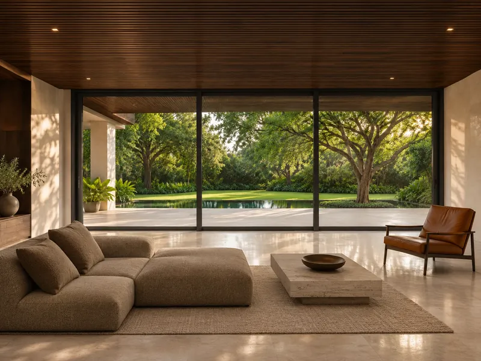
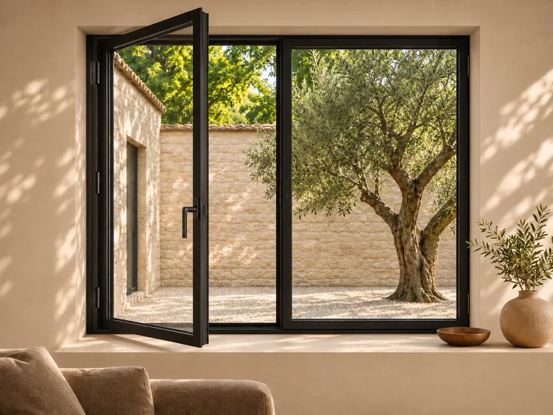
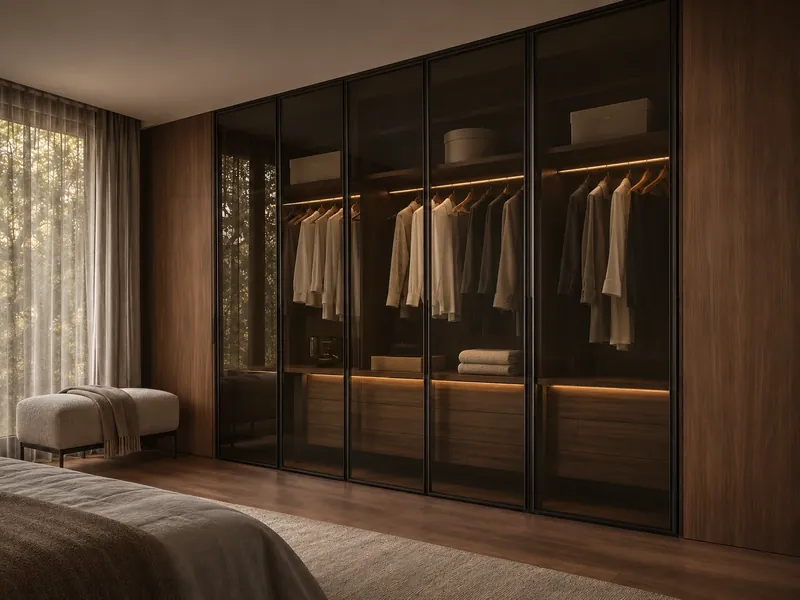
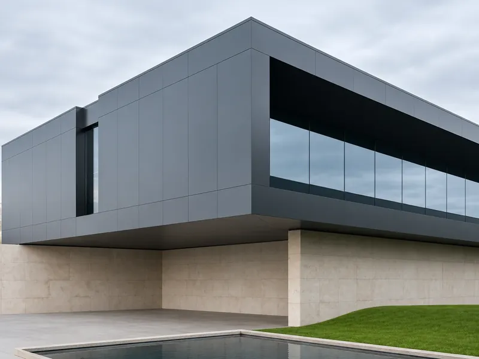

02 Assemblage
Une barre,
pensée au millimètre.
Chambres, rainures et rails de roulement : chaque profilé STRUGAL porte déjà la fenêtre qu'il deviendra.
Distributeur officiel STRUGAL · Fès & Sefrou
Profilés et systèmes aluminium STRUGAL pour les menuisiers et fabricants de Fès et de Sefrou, livrés partout au Maroc.
02 Assemblage
Chambres, rainures et rails de roulement : chaque profilé STRUGAL porte déjà la fenêtre qu'il deviendra.
02 Assemblage
Nous fournissons la matière première aluminium ; vos ateliers coupent, assemblent et posent.
02 Assemblage
Du coulissant économique S70P au levant-coulissant S125RP.
03 Ouverture
Le S125RP à levage va jusqu'à 400 kg et 3200 × 3000 mm par ouvrant (maxima selon configuration).
03 Ouverture
04 Au cœur du profil
Le profilé est séparé en deux demi-profilés reliés par des barrettes en polyamide, un matériau vingt fois moins conducteur. Le cadre laisse beaucoup moins passer la chaleur et le froid.
Lire le guide complet →Coupe illustrative, dimensions indicatives.
05 Finitions
Thermolaquage dans presque toutes les teintes RAL, anodisation, effet bois ou bicolore.
Choisir une finition →Anodisé Naturel
Nos gammes
Une matière première aluminium adaptée à chaque fabrication : du coulissant résidentiel au grand format architectural.

CoulissantsDu S70P économique au S140RP Infinity grand format.→
BattantsSTRUGAL S53RP+ et S46, portes ALUDOORS A400K et A200 4FH2.→
AgencementCuisines équipées et dressings sur-mesure, poignée intégrée.→
ExtérieurGarde-corps, volets roulants, pergolas et bardage aluminium.→Visuels d'ambiance à titre illustratif.
Pourquoi PROMPOLU
Plus de 18 ans passés à fournir aux menuisiers une matière première dont la qualité ne se discute pas à la livraison.
Systèmes espagnols testés aux normes européennes EN 12207, EN 12208 et EN 12210.
Du coulissant économique S70P au levant-coulissant S125RP : treize systèmes coulissants sur un seul catalogue.
Contact
N° 21, Rue Pékin, Av. El Wafaa 2, Rte de Sefrou — Fès 30050
Route d'El Menzel, Sefrou
Partout au Maroc.
Aperçu 3D · non publié